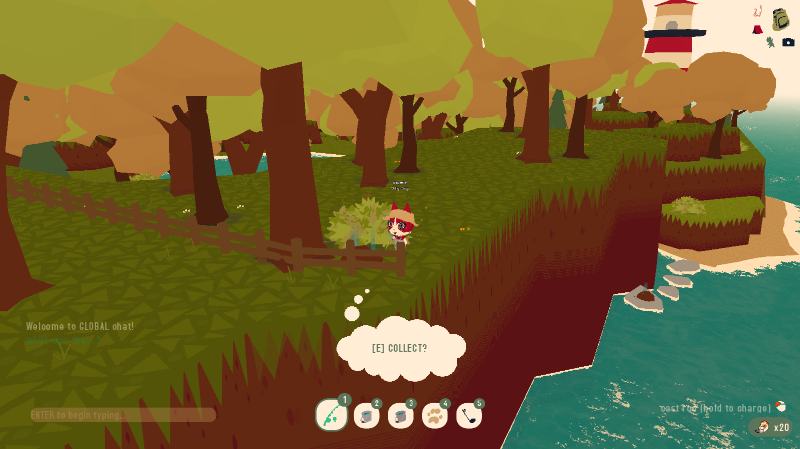
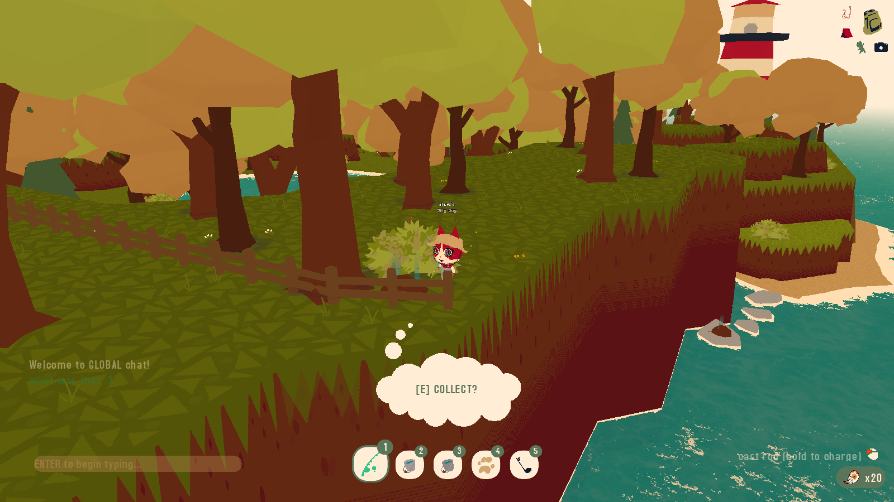
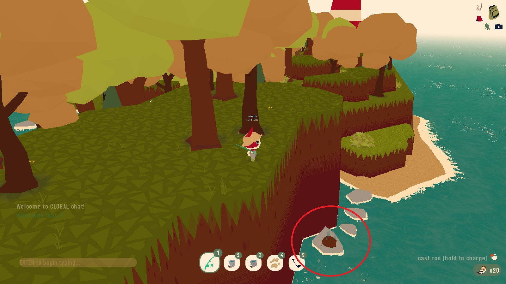
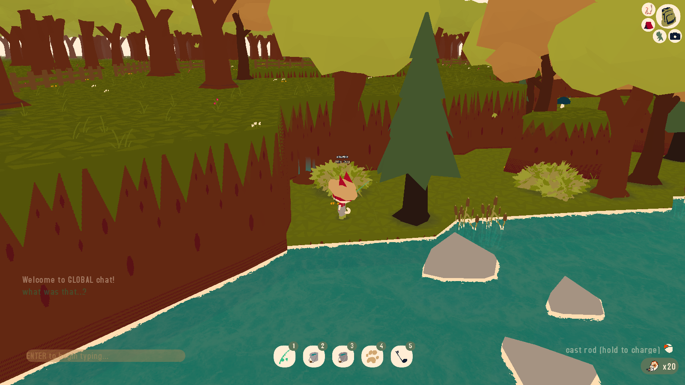
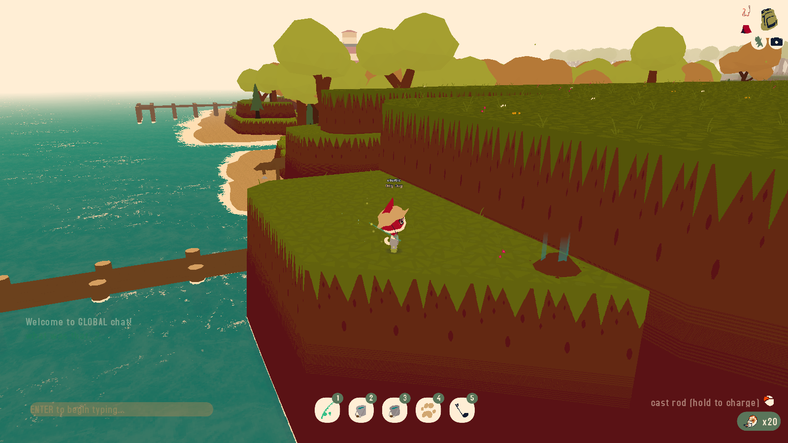
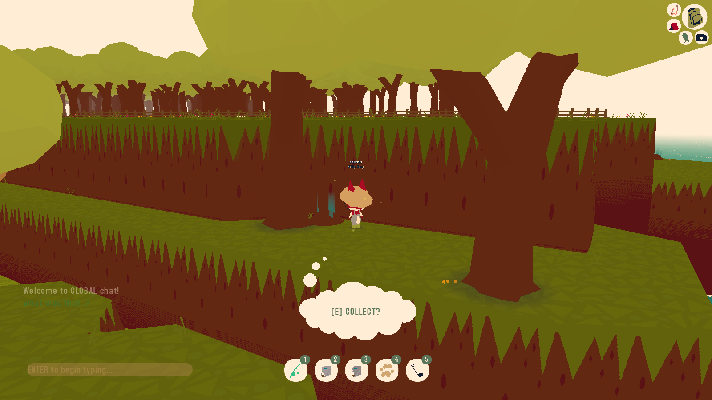

Spectral Humerus
The Spectral Humerus can be found behind a bush at the far corner of the map beyond the lighthouse.
The Spectral Rod is a purely cosmetic item that can be unlocked by collecting the five different Spectral Bones that are scattered around the island. After collecting each of the Spectral Bones, players can purchase the Spectral Rod from the Spectral Hand for $500.
The Spectral Humerus can be found behind a bush at the far corner of the map beyond the lighthouse.
The Spectral Spine is on a rock in the ocean just beyond the shore. You can jump down to this rock from the cliff where the humerous was found.
The Spectral Femur is in the corner of the map farthest from the ocean and the lighthouse and can be found next to a pond behind a bush.
The Spectral Skull can be found on a cliff just beyond the dock shop.
The Spectral Rib is located on a cliff in front of the dock shop. You can get there using the blue bouncy mushrooms nearby.
You can purchase the Spectral Rod from the Spectral Hand, which can be found under the waterfall on the river near spawn.